I'm K. M. Sifat—an engineer and researcher fusing biomedical innovation with modern machine learning. I build accessible diagnostics, digital health products, and intelligent decision support systems.
Biomedical EngineeringAI in HealthcareComputer VisionFastAPISolidWorks
From sensors to systems — practical, reliable builds.
Healthcare Automation
Blood Back Flow Prevention in IV Setup
you can download the project report from
📄 Download PDF
✅ When saline bag (IV bag) becomes empty blood back flow in the IV pipe
✅ Here use load cell to calculate the weight of the saline bag
✅ When its become empty then the solenoidal valve is activated to prevent back flow of blood
✅ Everything is controlled by Arduino Uno
✅ IoT based monitoring system has been developed using Blynk app
✅ Here also LED & LDR system has been used to detect the air bubble in the IV pipe
✅ Load cell-solenoidal valve system is calibrated properly for accurate operation
✅ Load cell-solenoidal valve system provides around 98% accuracy
✅ Bubble detection must be more optimized and calibrated for better result
Healthcare Assistance
Diatracker: A Multimodal Diabetes Assistance Device
you can download the project report from
📄 Download PDF
✅ Provide autmatic/semiautomatic insulin infusion system & app control insulin infusion system
✅ Provide noninvasive blood glucose monitoring system
✅ Provide noninvasive cholesterol monitoring system
✅ Provide noninvasive cholesterol monitoring system
✅ Provide assistance app for AI based diabetic foot ulcer detection
✅ Provide real time monitoring system
✅ Using Esp32, Servo-motor, syringe
✅ IoT based monitoring system has been developed using Blynk app
✅ Webapp designed using HTML, CSS, JavaScript, Flask(backend)
✅ Noninvasive blood glucose & cholesterol monitoring system done by estimation model from real lab data in KUET Medical Center
It is already published in IEEE Xplore. IEEE Xplore Link
Lowcost Monitoring
AirBender: Low Cost, Portable, Plug&play Air Quality Monitoring Device
you can download the project report from
📄 Download PDF
✅ Collaborated with my team to develop a plug-and-play air quality monitoring device
✅ Responsible for circuit implementation and 3D design & printing
✅ Enabled user flexibility to select which air or gas parameters to monitor
✅ Achieved a well-executed and professionally 3D-printed implementation
✅ Monitoring performance is highly reliable and close to precise measurements
✅ Developed using Arduino, MQ gas sensors, and a novel plug-in enclosure design
✅ Implemented an IoT-based real-time monitoring system
✅ Validated results by comparing with commercially available air quality devices
✅ Awarded two technical competition wins for this project
Remote controlling
Remote Control Car for Medical Purpose
you can download the project report from
📄 Download PDF
✅ Collaborated with my team to develop a plug-and-play air quality monitoring device
✅ Responsible for circuit implementation and 3D design & printing
✅ Enabled user flexibility to select which air or gas parameters to monitor
✅ Achieved a well-executed and professionally 3D-printed implementation
✅ Monitoring performance is highly reliable and close to precise measurements
✅ Developed using Arduino, MQ gas sensors, and a novel plug-in enclosure design
✅ Implemented an IoT-based real-time monitoring system
✅ Validated results by comparing with commercially available air quality devices
✅ Awarded two technical competition wins for this project
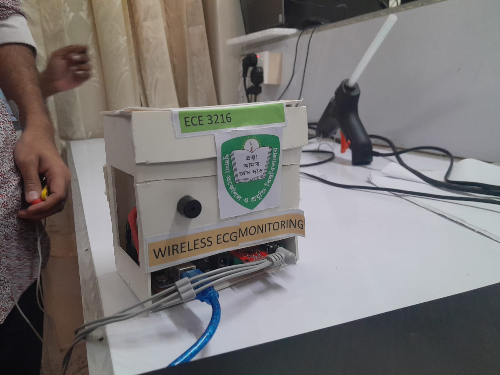
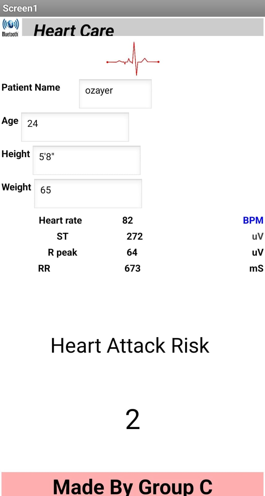
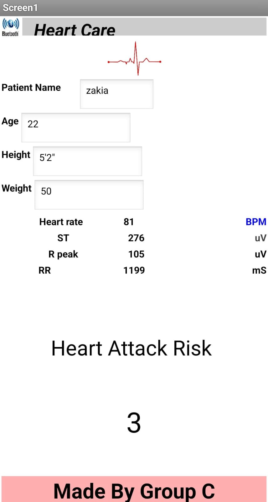
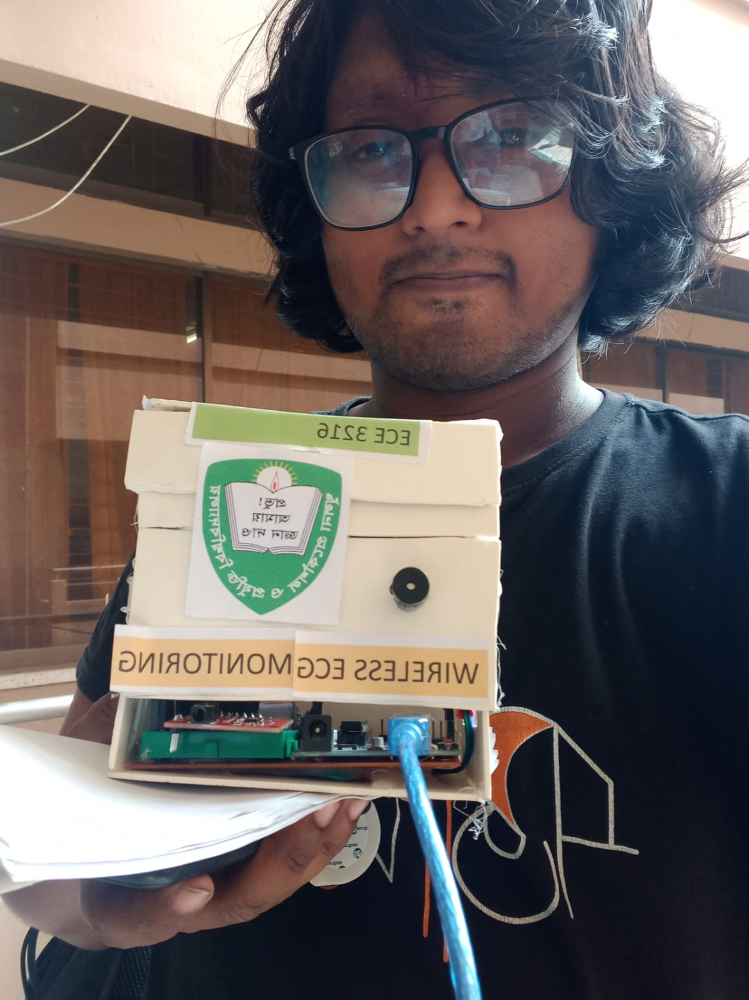
Telemedicine Monitoring
Telemedicine for Real Time ECG Monitoring
you can download the project report from
📄 Download PDF
✅ Developed an embedded system project where ECG is continuously monitored through a mobile application
✅ Used the AD8232 ECG module, integrated with Arduino Uno and a Wi-Fi module for real-time data transmission
✅ In the team, my role focused on ECG circuit implementation and mobile app development
✅ Snapshot of the app:
You can download the app apk file from this link. App apk
Healthcare Monitoring
Real-Time Non-invasive Heart Rate Monitoring
you can download the project report from
📄 Download PDF
✅ Non-invasive heart rate monitoring is day by day becoming popular
✅ We provide low cost heart rate monitoring solutions in this project
✅ LED-Phototransistor based system is designed and Implemented
✅ Signal is processed by Arduino Uno and transmitted to mobile app through Wi-Fi module
✅ Snapshot of the circuit is :
Biomedical Device
Low Cost Ventilator for Covid Patient
you can download the project report from
📄 Download PDF
✅ Contributed to a thesis project as an assistant to my senior, gaining hands-on research experience
✅ Delivered a low-cost ventilator solution aimed at accessibility and affordability
✅ Designed for easy setup, featuring a stable and balanced air-pushing mechanism with an efficient air pressure management system
✅ Executed the project in three structured phases: initial simulation, system implementation, and lab testing & validation
✅ My role focused on circuit implementation and simulation setup
✅ Utilized SolidWorks for mechanical design and fluid flow simulation
✅ Conducted laboratory testing using the BIOPAC ventilator testing system
you can download the project report from
📄 Download PDF
✅ A collaborative project carried out with one of my classmates
✅ Developed a remotely controlled and observable Transcutaneous Electrical Nerve Stimulation (TENS) device, representing the core innovation of the project
✅ The TENS device delivers a strong output of ~40 V peak and ~84 V peak-to-peak, demonstrating robust performance
✅ The key innovation lies in fully remote control via a mobile app, with stimulation signals visualized as real-time graphs on a display
✅ Initially, the circuit was designed and simulated, then implemented on a breadboard, followed by observation and calibration using an oscilloscope in the Instrumentation Lab, Biomedical Engineering Department, KUET
✅ Later, Arduino and an LED display were integrated to visualize the stimulation output for an enhanced real-time user experience
✅ Developed a mobile application using MIT App Inventor to remotely control stimulation parameters and observe output responses
✅ The circuit consists of an input voltage source, inverter, diodes, PNP transistor, microcontroller, and LED display for monitoring
✅ My role involved designing, simulating, and implementing the operating circuit, as well as calibrating the output response
✅ I also independently developed the mobile application using MIT App Inventor
✅ The project was fully funded by my project partner
you can download the App apk file from this link.
📄 Nerve Stimulator.apk
✅ Snapshot of the circuit is : 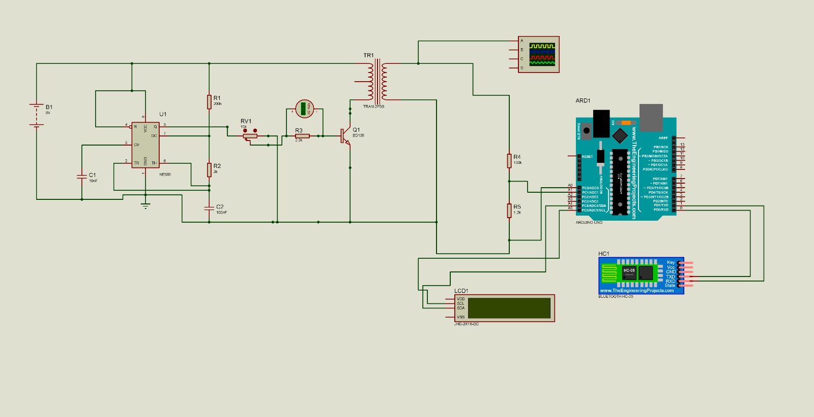
Biomedical Monitoring
Low Cost Patient Health Monitoring System with Android App
you can download the project report from
📄 Download PDF
✅ A collaborative project carried out with a team
✅ Developed a remotely controlled and observable patient monitoring system
✅ It provides several option of monitoring: body temperature, Heart rate, Oxygen Saturation (SpO2), Room temperature, Humidity and Body Movement Data
✅ It provides low cost remotely essential patient monitoring, visualization and app based access.
✅ My role involved designing, simulating, and implementing the operating circuit, as well as calibrating the output evaluation
✅ I also independently developed the mobile application using MIT App Inventor
you can download the App apk file from this link.
📄 Patient Monitor.apk
✅ Snapshot of the app is : 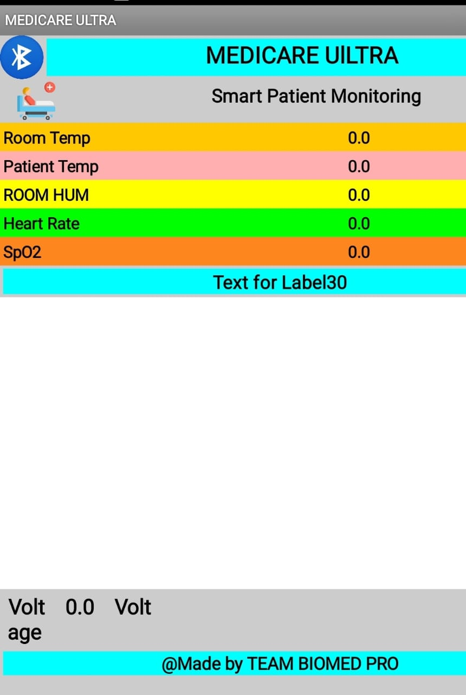
Circuit Schematic & PCB Design
Design, simulation and virtual implementation of electronic circuits in various circuit design software
Environment Monitoring
Dust & Pollution Detection Using OP-AMP
you can download the project from
📄 Download Proteus File
you can download the 3D file of PCB from
📄 PCB 3DS File
✅ Dust monitoring system using LED, LDR, and OP-AMP
✅ In a clean room, the LED light does not reflect back to the LDR or only a very small amount is reflected
✅ When dust particles are present, they scatter the LED light, causing the LDR to produce a voltage
✅ The OP-AMP amplifies this small voltage, and once it exceeds the threshold level, it triggers a high voltage output
Signal Processing
Low Pass Passive Filter Design
you can download the project from
📄 Download Proteus File
you can download the 3D file of PCB from
📄 PCB 3DS File
✅ Dust monitoring system using LED, LDR, and OP-AMP
✅ In a clean room, the LED light does not reflect back to the LDR or only a very small amount is reflected
✅ When dust particles are present, they scatter the LED light, causing the LDR to produce a voltage
✅ The OP-AMP amplifies this small voltage, and once it exceeds the threshold level, it triggers a high voltage output
3D Design
3D Design Using Solidworks
Air Pressure Transducer
Designed in Solidworks and rendered in
Blender
Air Pressure Transducer
Designed in Solidworks and rendered in
Blender
A flooded Subway
Designed & Rendered in Blender, Render Engine: Cycle
A flooded Subway (2nd View)
Designed & Rendered in Blender, Render Engine: Cycle
A Mystic Room of Piano
Designed & Rendered in Blender, Render Engine: Cycle
A Dreamy Fuel Station (Design View)
Designed & Rendered in Blender, Render Engine: Cycle
A Dreamy Fuel Station (Render View)
Designed & Rendered in Blender, Render Engine: Cycle
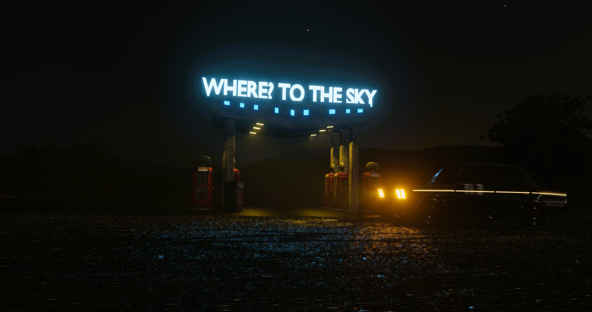
A Dreamy Fuel Station (Render View)
Designed & Rendered in Blender, Render Engine: Cycle
A Minitruck (Render View)
Designed & Rendered in Blender, Render Engine: Cycle
Boat Beneath the Moon in the Ocean (Render View)
Designed & Rendered in Blender, Render Engine: Cycle
A Cozy Room (Render View)
Designed & Rendered in Blender, Render Engine: Cycle
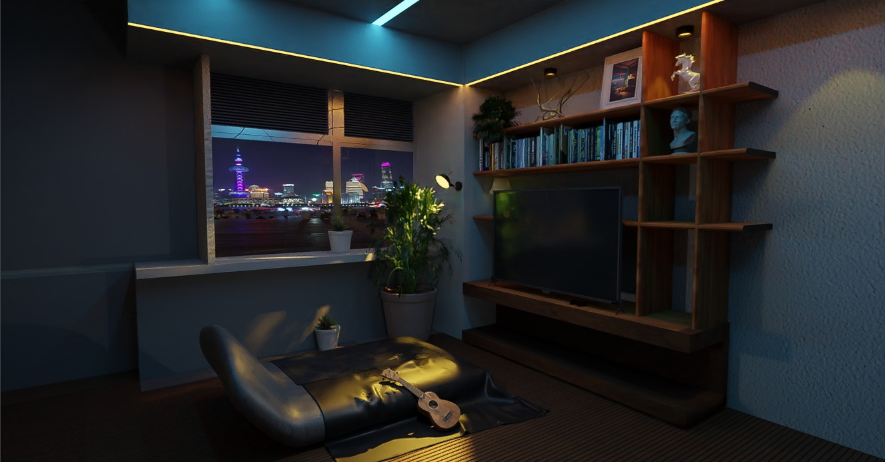
A Cozy Room (Another Render View)
Designed & Rendered in Blender, Render Engine: Cycle
To The War!
Designed & Rendered in Blender, Render Engine: Cycle
A Makup Room
Designed & Rendered in Blender, Render Engine: Cycle
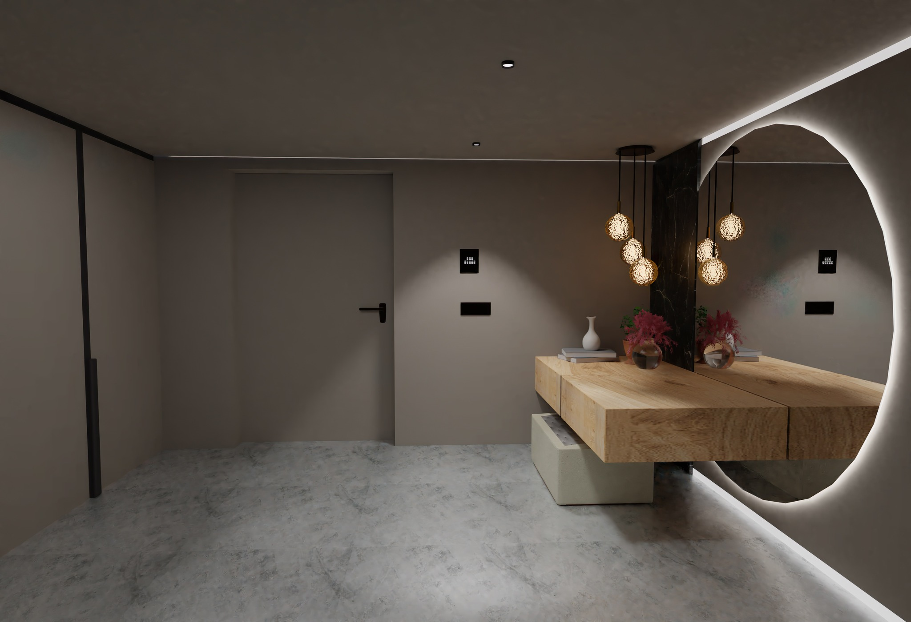
A Makup Room
Designed & Rendered in Blender, Render Engine: Cycle
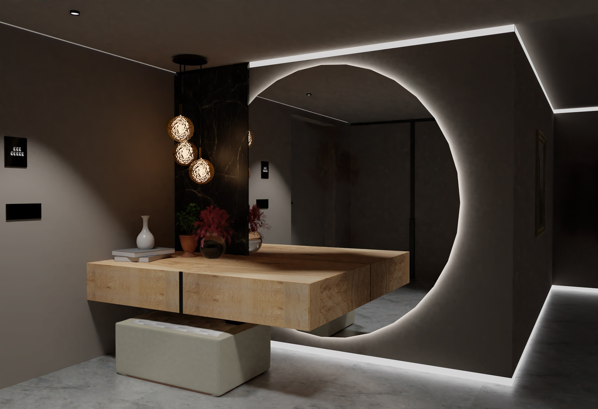
A Makup Room
Designed & Rendered in Blender, Render Engine: Cycle
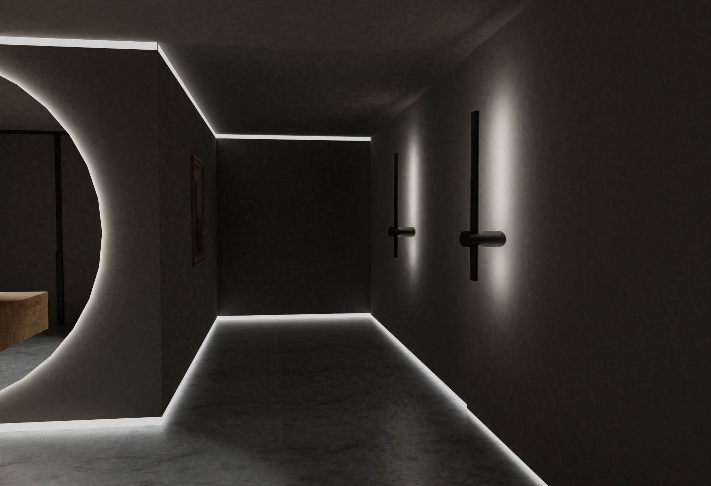
A Makup Room
Designed & Rendered in Blender, Render Engine: Cycle
A Innovative Modern Bus Stop
Designed & Rendered in Blender, Render Engine: Cycle
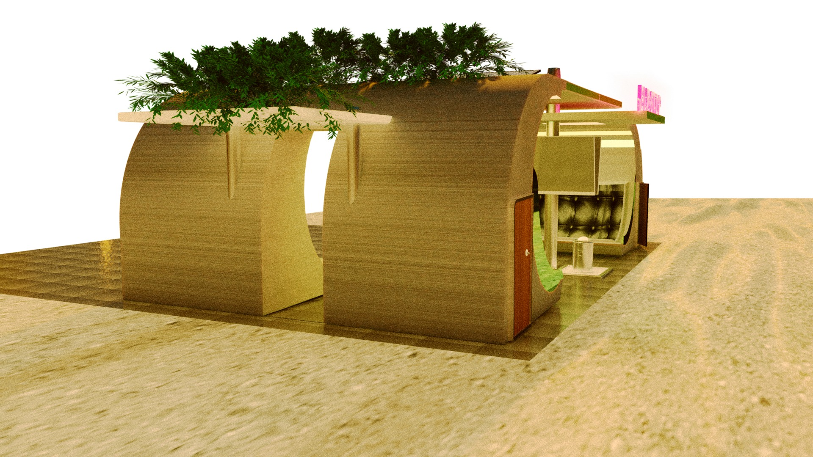
A Innovative Modern Bus Stop
Designed & Rendered in Blender, Render Engine: Cycle
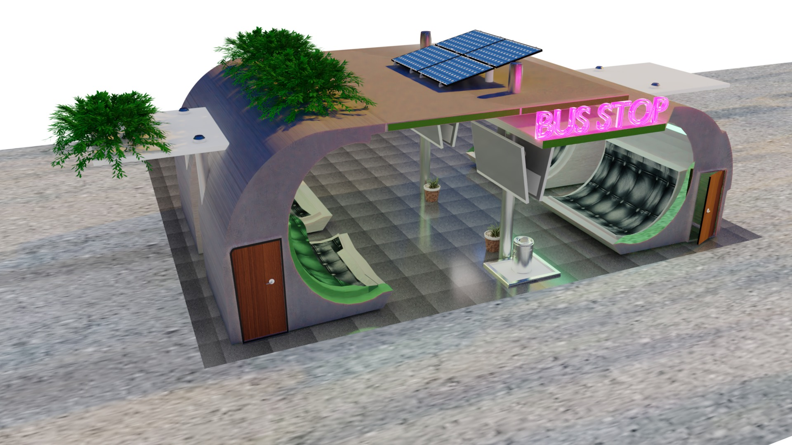
A Innovative Modern Bus Stop
Designed & Rendered in Blender, Render Engine: EVEEE
.jpg)